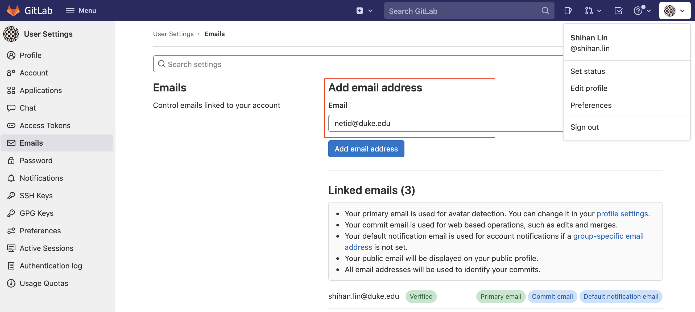
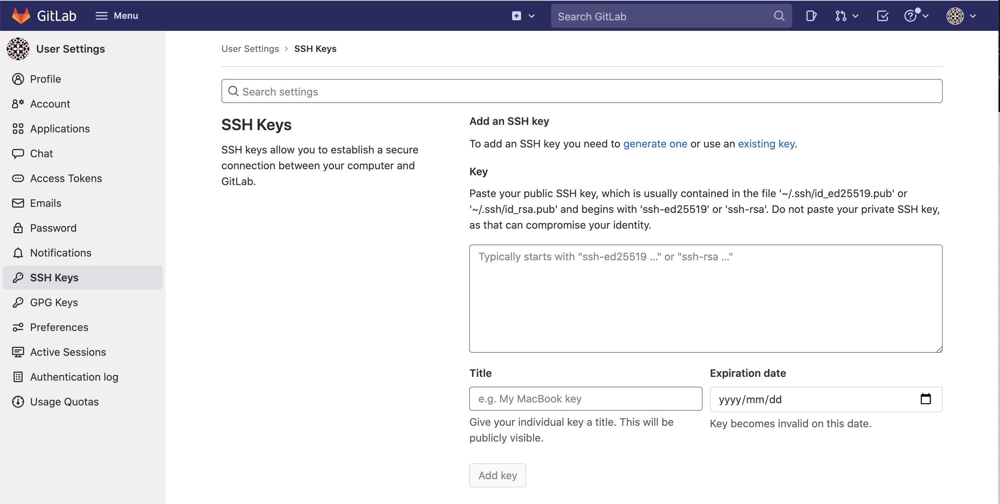

Use your duke account to login to Coursework. Before you can access to your repo, you need to add your email address ''netid@duke.edu'' to the account. Go to Preference - Emails, and you can add your email as shown below.
You may need to add your ssh keys so that you can git clone your repo. If you are not familiar with ssh keys, see this link for detail.
